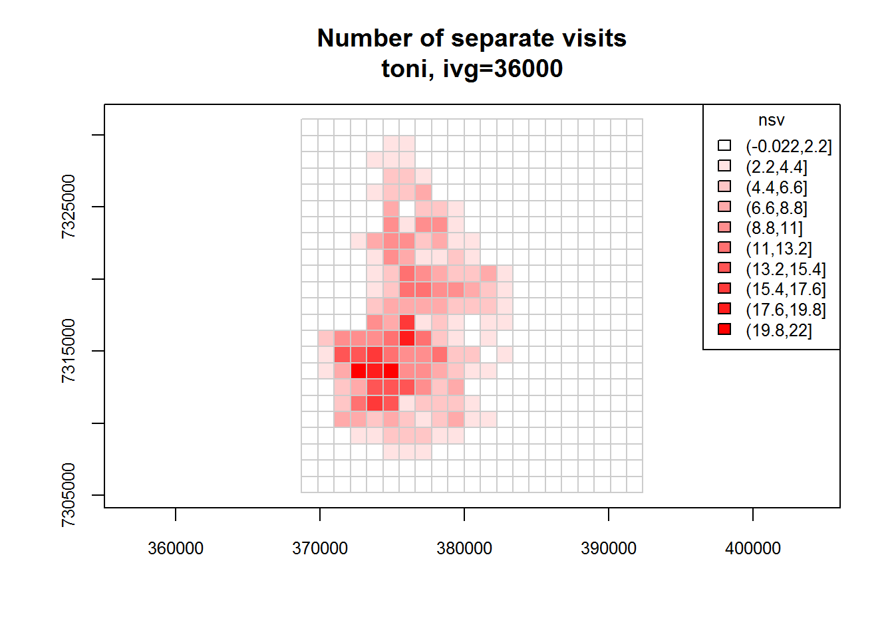
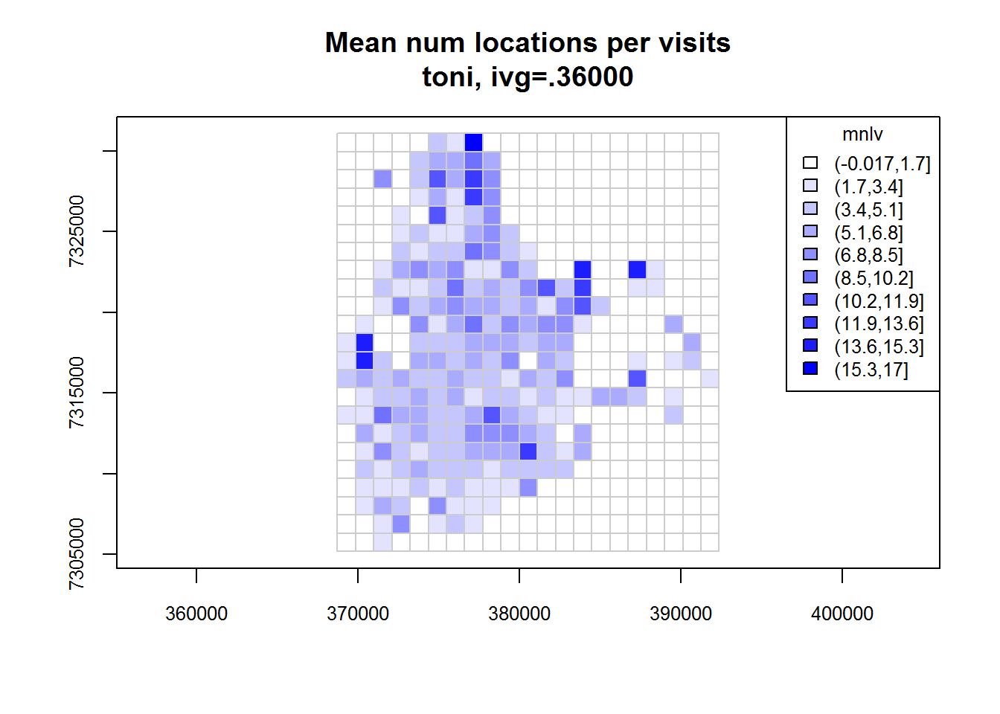
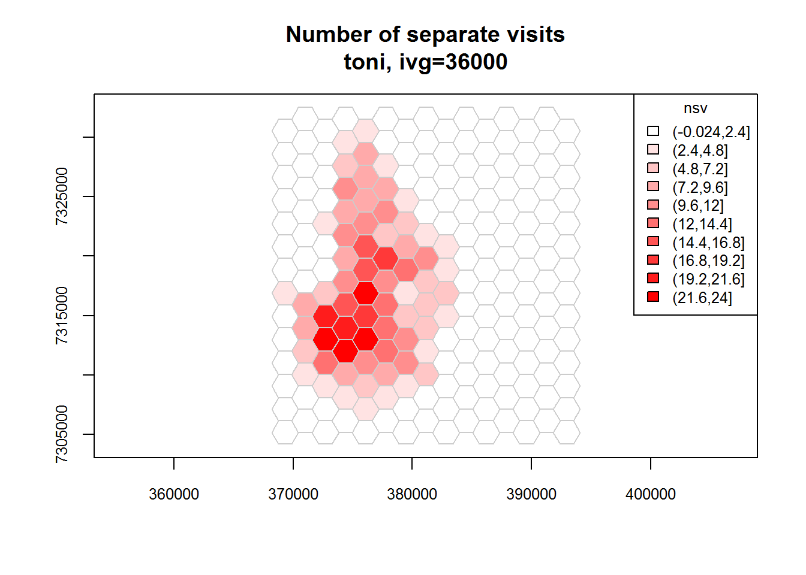
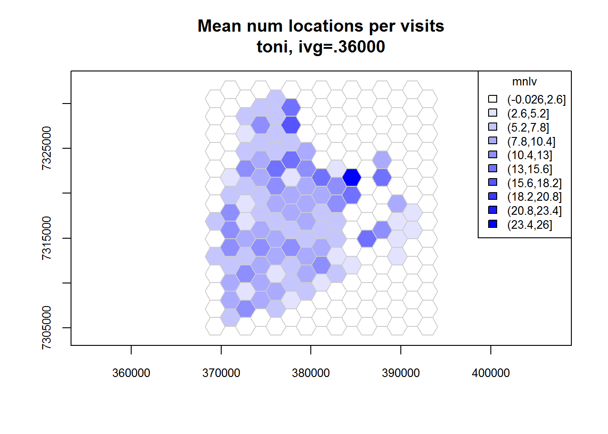
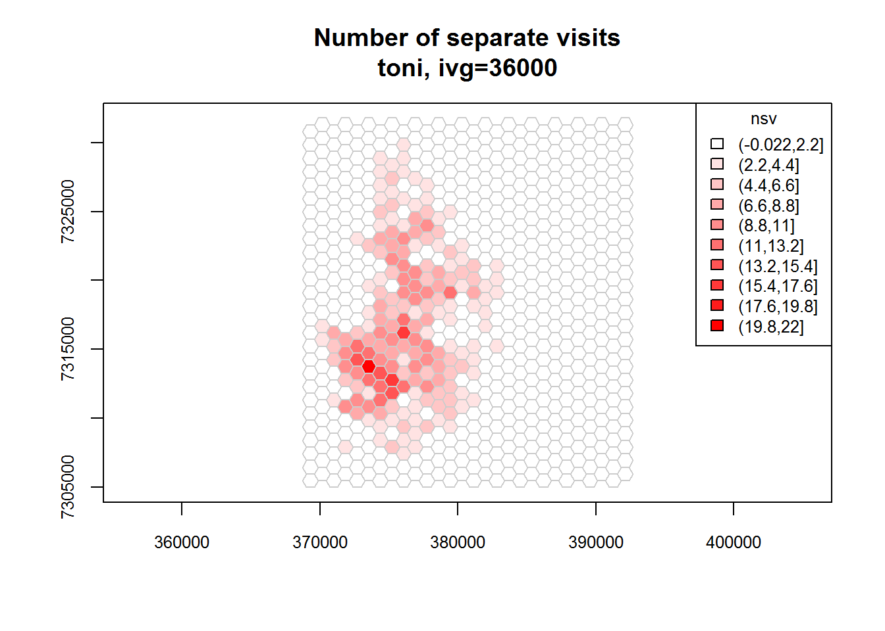
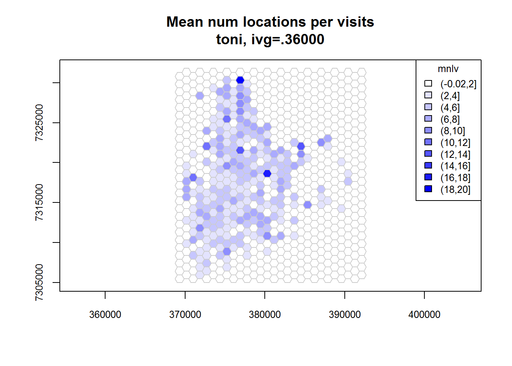
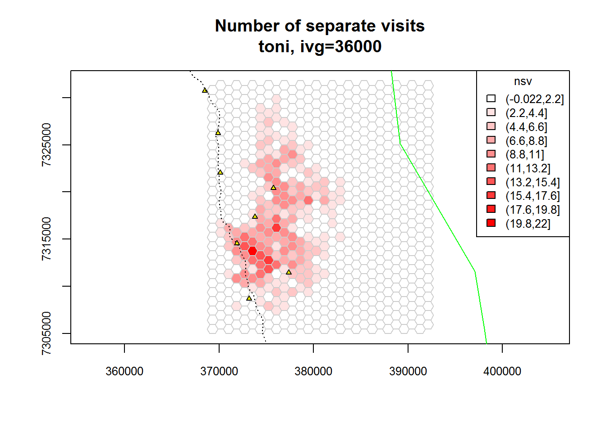

The spatial patterns of revisitation and duration of visits can yield insights into animal behavior and resource use. T-LoCoH computes revisitation and visit duration as metrics of hulls (little MPCs constructed around each point). In addition, you can also compute revisitation and duration for a fixed grid or hexagonal surface. This tip demonstrates how to do this.
The first step is to load the packages. The function which computes time use metrics for a square or hexagonal superimposed on the location data is currently saved in the tlocoh.dev package (the ‘development’ package for tlocoh1). Note that we need tlocoh.dev version 1.33.00 or later.
library(tlocoh)
library(tlocoh.dev)## tlocoh.dev contains features under development for T-LoCoH
## Version 1.33.00
## URL: http://tlocoh.r-forge.r-project.org/
## Please send bug reports and feedback to tlocoh@gmail.comNext we’ll load a sample dataset from the internet. We’ll use a LoCoH-xy object for Toni the Buffalo from South Africa.2
mycon <- url("http://tlocoh.r-forge.r-project.org/toni.n5775.2005-08-22.2006-04-23.lxy.RData")
load(mycon); close(mycon) Quantifying the rate of revisitation requires a definition of what a ‘visit’ constitutes. In tlocoh, visits are defined based on a minimum time period an individual remains away from an area. This parameter is known as the inter-visit gap (IVG). For example, if the inter-visit gap is 6 hours, then whenever the individual is away from a hull or grid cell for more than 6 hours, the next time they are back at that location is counted as a different visit.
Choosing an inter-visit gap interval is a subjective decision, but should be shaped by 1) the sampling frequency (because you can’t differentiate visits with an IVG shorter than the sampling frequency), and 2) the temporal signature of the behavior of interest. Let’s look at the sampling frequency of Toni the Buffalo:
summary(toni.lxy)## Summary of LoCoH-xy object: toni.lxy
## ***Locations
## id num.pts dups
## toni 5775 9
## ***Time span
## id begin end period
## toni 2005-08-23 2006-04-23 243.3 days
## ***Spatial extent
## x: 369305.5 - 391823.9
## y: 7305737.9 - 7330491.3
## proj: +proj=utm +south +zone=36 +ellps=WGS84
## ***Movement properties
## id time.step.median d.bar vmax
## toni 3600 (1hs) 173.7452 0.9267969
## ***Ancilliary Variables:
## -none-
## ***Nearest-neighbor set(s):
## none savedIt looks like Toni’s locations were generally recorded once per hour. If we are interested in behaviors associated with diurnal patterns of revisitation, for example, then a reasonable value of the inter-visit gap might be 10 hours. This means if Toni is away from a cell for more than 10 hours, then her next occurence in the cell should be counted as a different visit. Hence morning and evening visits to a water hole would be considered different visits.
Now that we have selected a IVG value, we can now compute the revisitation rate for each cell using the function lxy.tumap(). Note that this function requires a LoCoH-xy object, not a hullset (because we are not using hulls here). The gridtype argument is used to specify the type of grid we want - square or hexagonal. The ivg argument should be expressed in seconds. By default, lxy.tumap() will compute both the revisitation rate (number of separate visits) and a proxy for the average duration of each visit (expressed not as time but as the mean number of locations per visit mnlv).
toni.tumap1 <- lxy.tumap(toni.lxy, ivg=10*3600, gridtype="square")## Constructing 483 cells
## 1 of 1. Computing the number of visits in each hull for ivg=36000 (10hs)
## Identifying enclosed points...Done.plot(toni.tumap1, cex.axis=0.8, cex=0.8, legend="topright")
toni.tumap2 <- lxy.tumap(toni.lxy, ivg=10*3600, gridtype="hex")## Constructing 210 hexagons
## 1 of 1. Computing the number of visits in each hull for ivg=36000 (10hs)
## Identifying enclosed points...Done.plot(toni.tumap2, cex.axis=0.8, cex=0.8, legend="topright")
You can control the cell size either by passing the cellsize argument (i.e., the cell width in map units), or the mindim argument (which specifies the minimum number of rows and/or columns).
toni.tumap3 <- lxy.tumap(toni.lxy, ivg=10*3600, gridtype="hex", mindim=40)## Constructing 756 hexagons
## 1 of 1. Computing the number of visits in each hull for ivg=36000 (10hs)
## Identifying enclosed points...Done.plot(toni.tumap3, cex.axis=0.8, cex=0.8, legend="topright")
If we have shapfiles in the same projection system, we can import them using the rgdal package, and overlay them on the time use map.
require(rgdal)## Loading required package: rgdal## rgdal: version: 1.1-3, (SVN revision 594)
## Geospatial Data Abstraction Library extensions to R successfully loaded
## Loaded GDAL runtime: GDAL 2.0.1, released 2015/09/15
## Path to GDAL shared files: C:/Users/Andy/Documents/R/win-library/3.0/rgdal/gdal
## GDAL does not use iconv for recoding strings.
## Loaded PROJ.4 runtime: Rel. 4.9.1, 04 March 2015, [PJ_VERSION: 491]
## Path to PROJ.4 shared files: C:/Users/Andy/Documents/R/win-library/3.0/rgdal/proj
## Linking to sp version: 1.2-2kruger_bnd <- readOGR(dsn=".", layer="knp_boundary_36s", verbose=FALSE)
kruger_water <- readOGR(dsn=".", layer="drinking_troughs_36s", verbose=FALSE)
kruger_roads <- readOGR(dsn=".", layer="roads_36s", verbose=FALSE)
plot(toni.tumap3, mnlv=FALSE, nsv=TRUE, cex.axis=0.8, cex=0.8, legend="topright")
plot(kruger_bnd, add=TRUE, border="green")
plot(kruger_water, add=TRUE, pch=24, col="black", bg="yellow", cex=0.6)
plot(kruger_roads, add=TRUE, lty=3, col="black")
The object returned by lxy.tumap() is a list of SpatialPolygonsDataFrames (one per individual). The cell values of nsv and mnlv are saved in the attribute table. To export it to a Shapefile, we can use a function from the rgdal package.
require(rgdal)
writeOGR(toni.tumap3[["toni"]], ".", "toni_timeuse", overwrite_layer = TRUE, driver="ESRI Shapefile")
list.files(".", pattern = "^toni") ## [1] "toni_timeuse.dbf" "toni_timeuse.prj" "toni_timeuse.shp"
## [4] "toni_timeuse.shx"T-LoCoH Tips. If you find this tip useful, or have feedback or another question on how to use T-LoCoH, please contact the package author. (c) 2015
tlocoh.dev can be installed from install.packages(“tlocoh”, dependencies=T, repos=“http://R-Forge.R-project.org”)↩
Kruger African Buffalo, GPS tracking, South Africa. Downloaded from http://www.movebank.org, July 2012. Collection of Kruger Park Buffalo data funded by NSF Grant DEB-0090323 to Wayne M. Getz. Principal Investigator: Paul Cross↩